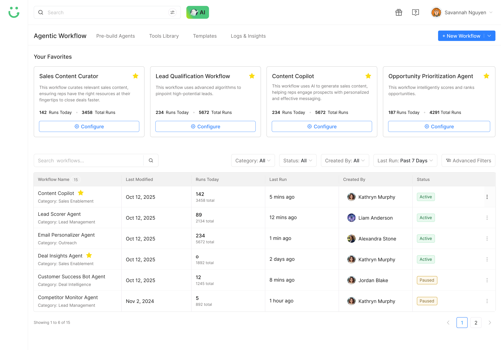
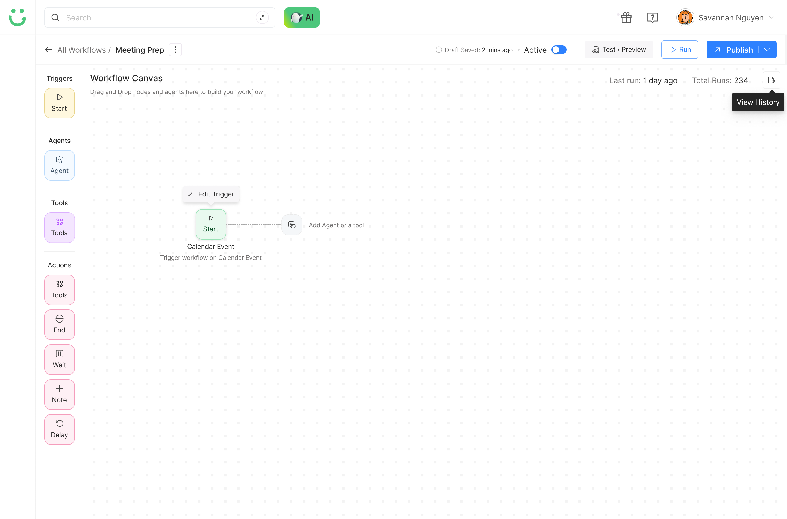
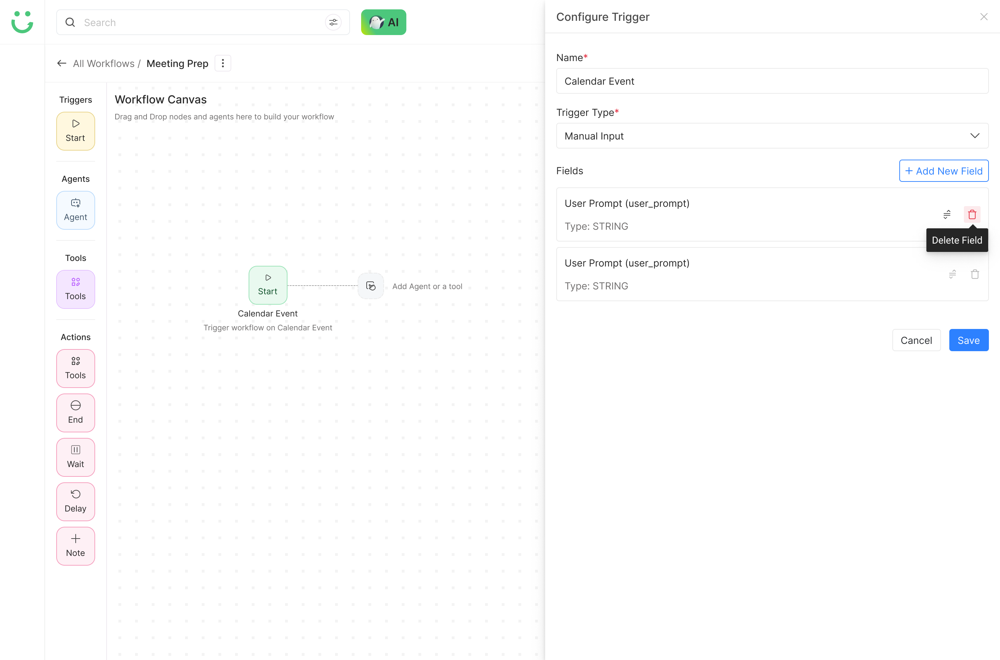

Agentic Workflow Module
Design Decisions
Solving the Hard Problems
01
Workflows as Operational Assets
Instead of hiding workflows inside settings, we designed a clear listing page with status, runs, owner, last run, and favorites. This made workflows feel manageable and trackable - not invisible backend configurations that teams lost track of after setting them up.

02
Templates Before Blank Canvas
Users struggled to start from scratch, so we added templates and favorite workflows to reduce setup fatigue. The goal was to help users start faster without losing flexibility - a blank canvas is not empowering, it's paralyzing. Templates gave users a launchpad, not a constraint.

03
Visual Builder + Intent-Based Input
We combined drag-and-drop creation with AI-assisted suggestions. Users could either build manually or describe their goal and let the system suggest the workflow structure. Power users kept control; new users got guidance. The same surface served both without switching modes.

04
Clear Node Categories
Triggers, agents, tools, and actions were separated in the left rail with distinct icons and color coding. This reduced the "where do I find X?" problem and helped users understand what each building block does before dropping it on the canvas.

05
Configuration Without Losing Context
We used side drawers for trigger and node configuration so users could edit details while still seeing the full canvas. This kept the mental model intact - users always knew where they were in the workflow while making changes to individual steps.

06
Test Before Publish
Because agentic workflows can act automatically, users needed trust before launch. Test/Preview, Run, Publish, and History gave users clear control and confidence. They could validate behavior before a workflow touched real data, real contacts, or real business logic.
07
Show the Reasoning Trail
ARE needed visibility, not mystery. We designed logs and reasoning views so users could understand why a workflow ran, why it failed, or why it chose a specific path. This was not optional - trust in an agentic system depends on explainability at every step.